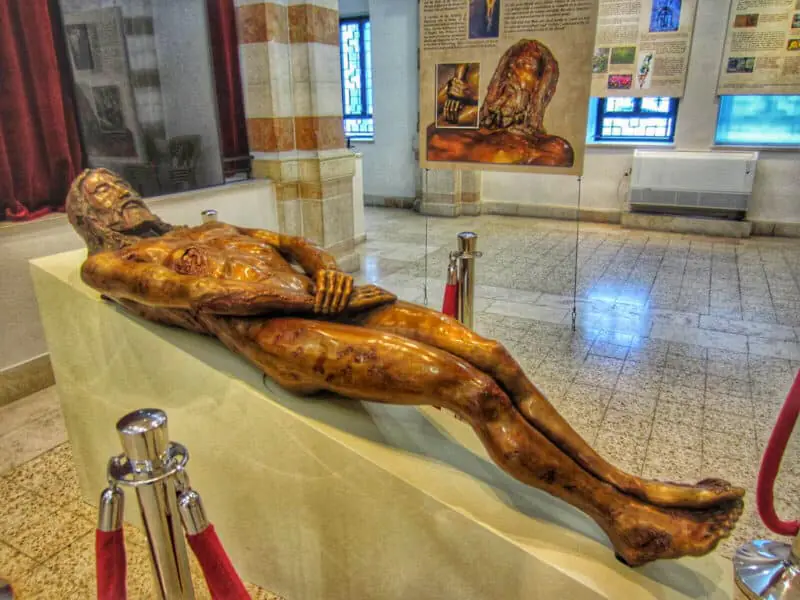
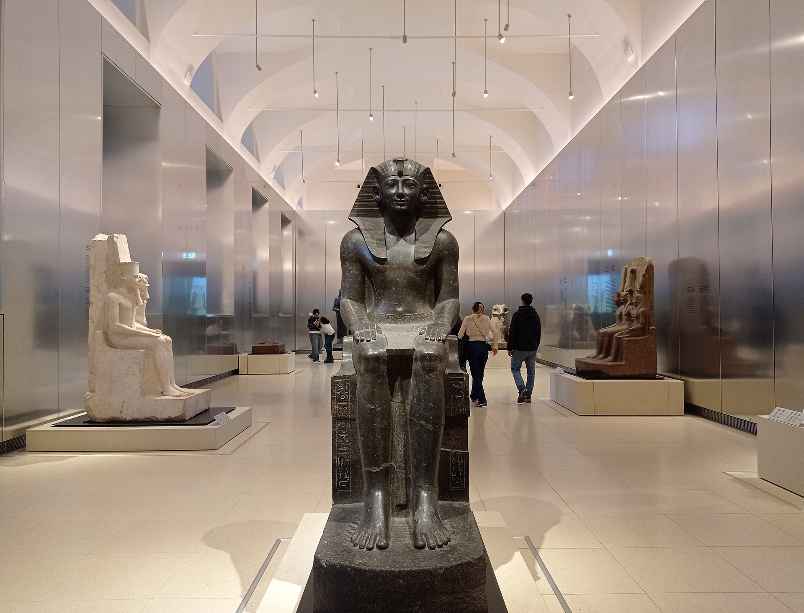
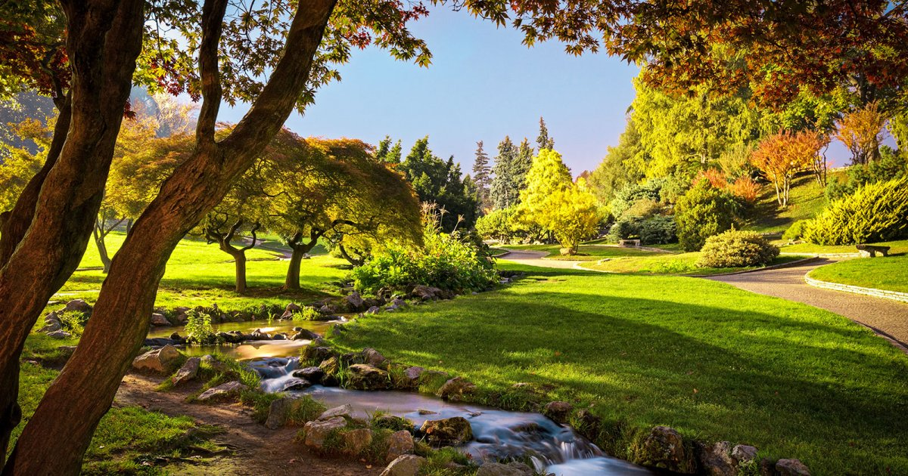
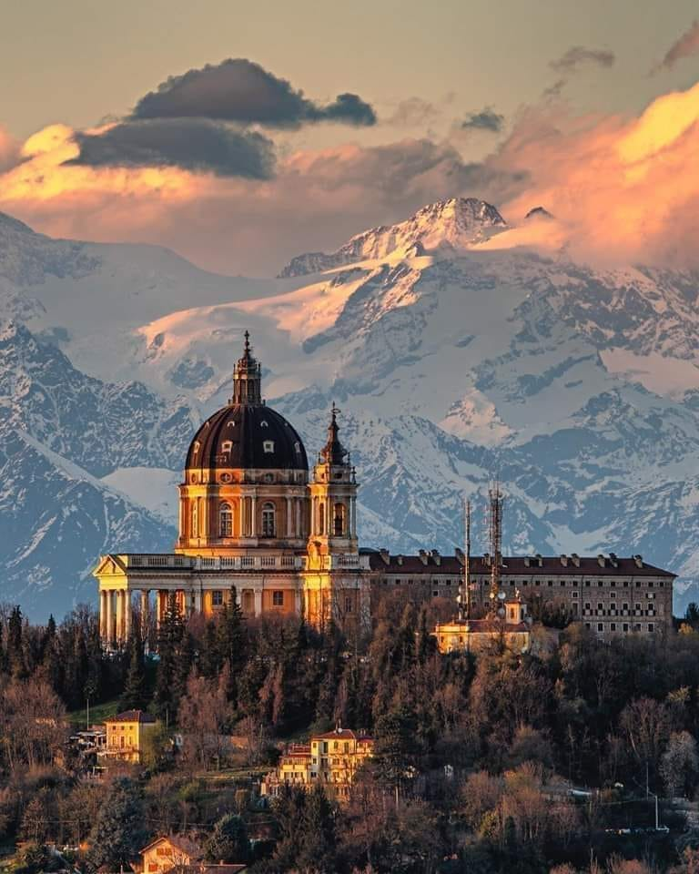
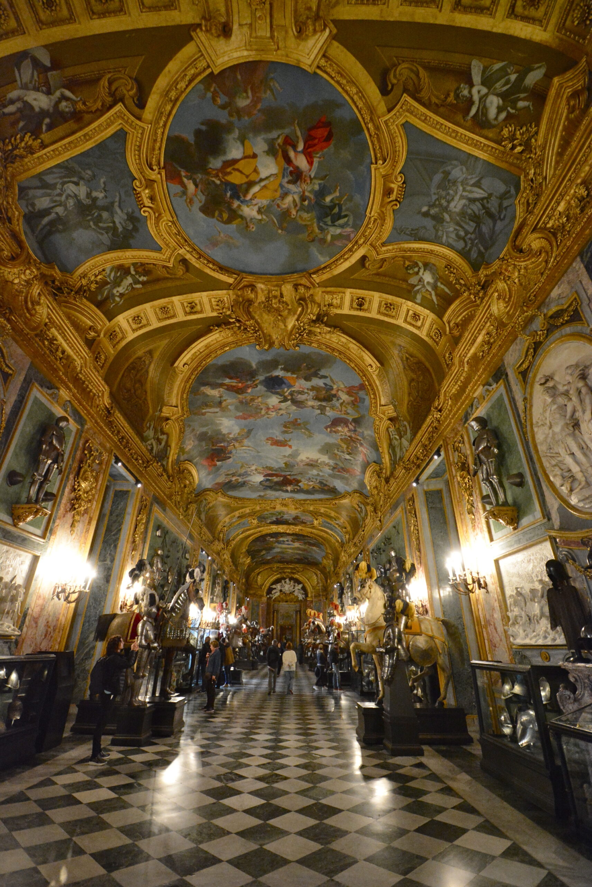

Lepel múzeum
A leplet jelenleg az olaszországi Torinó városában, a Szent János-katedrálisban őrzik. A katolikus egyház nem jelentette ki hivatalosan, hogy valóban Jézus halotti leple lenne, de nagy tisztelettel kezeli, és gyakran mutatják be hívők számára.
Museo Egizio
A világon a második legnagyobb egyiptológiai gyűjtemény - gazdag sírleletek, szarkofágok és ritka tárgyak sokasága, történelmi kontextussal és modern kiállításrendezéssel. Több órát érdemes rá szánni.
Parco del Valentino
Déli parti liget a Pó folyó mellett - romantikus sétányok, botanikus kert, és a 19.századi rekonstrukcióként épült középkori falucska (Borgo Medievale). Ideális pihenésre, piknikre és városi sétára.
Basilica di Superga
Dombtetőn álló barokk bazilika, ahonnan panorámás kilátás nyílik egész Torinóra és az Alpokra. Híres történelmi emlékhely és kiváló hely naplemente megtekintésre; a bazilikához kisvasúttal(tramvia/superga finucular) is fel lehet jutni.
Palazzo Reale
A Savoia-ház egykori rezidenciája pompás termekkel, freskókkal és királyi gyűjteményekkel. A palota és a kapcsolódó múzeumi részek elegáns betekintést nyújtanak Torino történelmi fényébe.